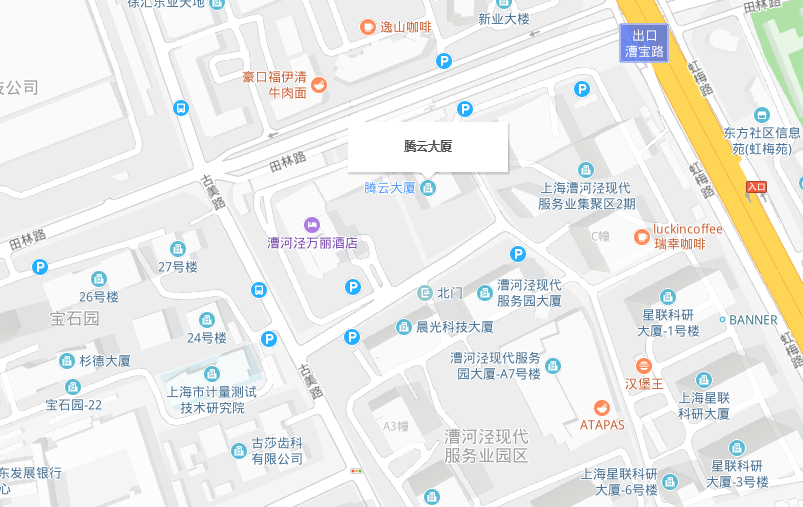

负责重点项目的前端技术方案和架构的研发和维护工作
1、专科及以上学历，计算机或软件相关专业，三年及以上工作经验；
2、熟悉PC端web应用和移动端web应用（小程序、H5页面、APP等）；
3、熟练掌握 HTML、CSS、Less/Sass、JavaScript、Echarts、BootStrap 等技术；
4、熟练掌握前端常见开发框架，如Vue.js、React.js,对前端组件化、模块化有一定理解；
5、熟练掌握ElementUI、Anti Design UI、Vant UI、等至少一种开源UI框架；
6、熟练使用ajax，axios等实现前后端数据交互；
7、具备面向对象编程思想，熟练运用ES6；
8、对前端技术有持续的热情，能够主动研究相关新技术，具有较强的学习能力；
9、良好的协调沟通能力和团队合作精神，执行力强，有强烈的责任心；
10、有地理信息系统（GIS）开发经验，掌握openlayers、leaflet或supermap优先。
上海市-徐汇区-腾云大厦
